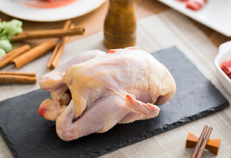

网站首页
关于我们
特色菜品
新闻资讯
合作加盟
联系我们
~ 明档出餐 ~
怎么舍得让你久等
~ 千种菜品 ~
想吃啥都告诉我
~ 好吃实惠 ~
要给你最好的
在原有品类基础上基于新定位，大变小（分量），少变多（数量），不但增加点单的丰富度，还提升了客单价，增强品牌的盈利能力。
产品更丰富
更高溢价
不止产品的丰富度更吸引人，大米君从空间的环境也植入了一些氛围，特别是晚餐以及周末时段，整体场景不再限于 “独食”，两到三人的小吃、小喝、小聚也可以。
经营多时段
更多满足

传统快餐主要是堂食，过度依赖线下流量，外卖平台的兴起实现传统与互联网无缝对接。《中国餐饮年度报告》显示快餐品类的外卖营业额占比达到35.2% ，远远高于其他品类。
菜品新鲜做
更好陈列
主流消费群体的趋向年轻化，他们追求良好的用餐体验，大米君更精准的定位用户，用餐中往往也融合着社交和娱乐等因素，满足年轻用户需求。
客群定位准
更多流量
相比于一线城市西式快餐、中西式正餐等品类门店数大幅减少，中式快餐却依然保持1.7%增长。在三四线城市，提前布局三四线城市的商家将可能赢得发展先机。
三四线城市
成为重要增长点
过去消费者选择快餐就是来快速解决时间，要求并不高而现在消费者的需求越来越多，，多/全时段经营也开始成为餐饮人思考的问题。
顾客需求
不再单一
~ 蒸 ~
甄选东北长粒大米
低压快煮蒸汽补炊
口感绵软润滑香糯
好大米粒粒闷出来
~ 料 ~
新鲜五彩时蔬选料严谨
多种食材搭配营养丰富
秘制私家酱料香味突出
赋予炒菜丰富层次口味
~ 炒 ~
48小时食材新鲜现炒制
核心秘制酱料配方
标准化制作出餐迅速
料食客忘不了的绝味